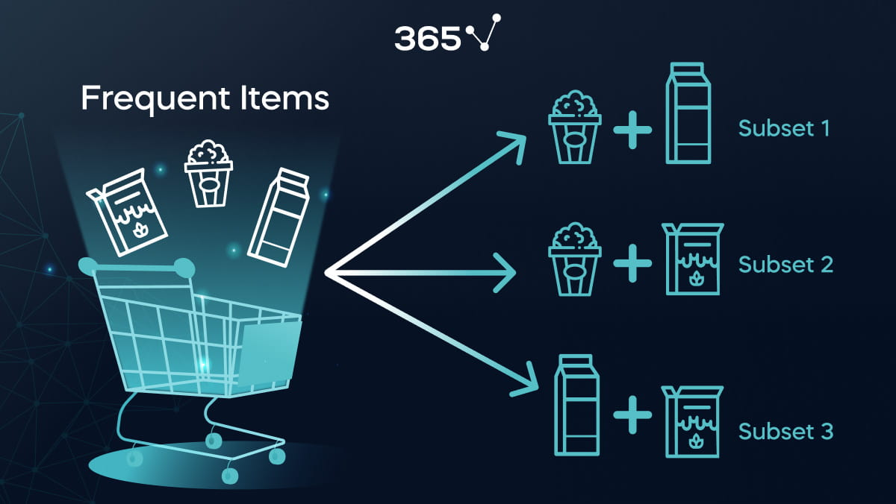
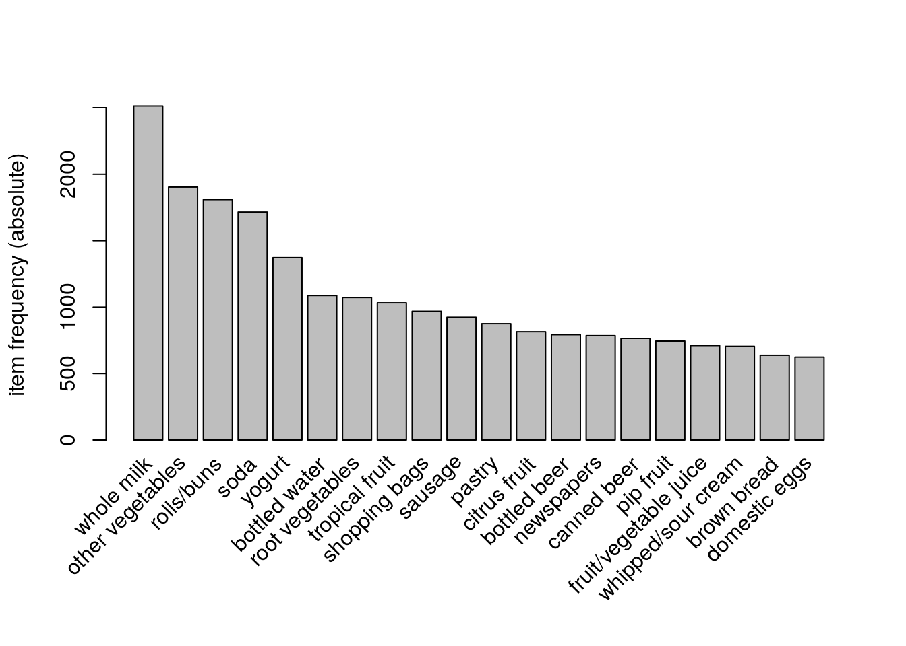
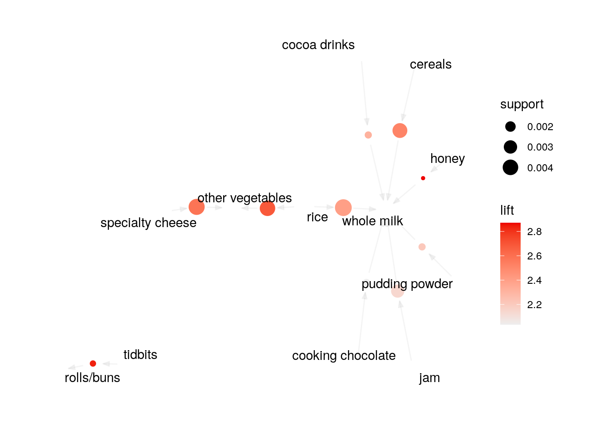

library(dplyr)
library(arules)
library(arulesViz)
data("Groceries")39 Phân tích giỏ hàng
39.1 Giới thiệu
Phân tích giỏ hàng là 1 phương pháp phân tích để tìm ra được tổ hợp các sản phẩm hay được khách hàng mua cùng nhau dựa trên thực tiễn quan sát khách hàng mua hàng tại siêu thị, cửa hàng tiện lợi…
Ví dụ:
- Khách hàng vào siêu thị, có thể mua cùng lúc nhiều sản phẩm bao gồm: sữa, cà phê, trứng, rau cải,…
- Khai hàng mua hàng online có thể mua cùng lúc nhiều các dòng sách khác nhau
Mỗi một đơn hàng hay giỏ hàng khách hàng mua sẽ chứa đựng các thông tin về xu hướng, nhu cầu của khách hàng. Phân tích giỏ hàng (basket analysis) cho phép tìm ra được các hành vi và liên kết giữa các sản phẩm mà khách hàng mua.

Trong phân tích giỏ hàng, các khái niệm quan trọng cần nắm vững bao gồm:
- Item: Sản phẩm chứa trong giỏ hàng
- Transaction: Giao dịch là một hoặc một nhóm các sản phẩm được mua khi khách hàng thực hiện trong cùng một giao dịch
- Rule: Rule là một quy tắc thể hiện mối quan hệ giữa các sản phẩm có trong cùng một giỏ hàng, có dạng
nếu A, thì B.
\[\left \{{i_{1},i_{2},...}\right \} => {i_{k}}\]
Ví dụ: {Bánh mỳ} => {Sữa}: Nếu khách hàng mua bánh mỳ thì khách hàng sẽ mua thêm sữa
- Support：Tần suất (dưới dạng phần trăm) xuất hiện của các quy tắc trong tổng số các giao dịch.
Ví dụ: Một cửa hàng trong tháng 1 có 100 khách hàng, mỗi khách hàng thực hiện một giao dịch. Trong đó 50 khách hàng mua sản phẩm A, 75 khách hàng mua sản phẩm B, và 25 khách hàng mua cả sản phẩm A và B - Support(sản phẩm A) = 50% - Support(Sản phẩm A, sản phẩm B) = 25%
- Confidence: Cơ hội mua sản phẩm tiếp theo trong hành vi giao dịch của khác hàng.
\[Confidence (i_{m} => i_{n}) = \frac{support(i_{m}\frown i_{n})}{support (i_{m})}\] Ví dụ: Confidence (sản phẩm A , sản phẩm B) = 25/50 = 50% - Nếu 1 người mua sản phẩm A, thì xác suất họ cũng mua sản phẩm B là 50%
- Lift: Nếu khách hàng mua sản phẩm A thì khả năng họ mua sản phẩm B sẽ tăng lên bao nhiêu %
\[Lift(i_{m} => i_{n}) = \frac{support(i_{m}\frown i_{n})}{support(i_{m}) * support (i_{n})} = \frac{Confidence (i_{m} => i_{n})}{support (i_{n})}\] - Lift có thể cho 3 loại giá trị - Lift > 1: tức là những sản phẩm ở vế trái của rule sẽ làm tăng khả năng xảy ra của những sản phẩm ở vế phải của rule (2 sản phẩm bổ trợ). Ví dụ, mua bia sẽ mua thêm lạc. - Lift < 1: tức là những sản phẩm ở vế trái của rule sẽ làm giảm khả năng xảy ra của những sản phẩm ở vế phải của rule ( 2 sản phẩm thay thế được cho nhau). Ví dụ, mua bia sẽ không mua thêm cafe. - Lift = 1: Các sản phẩm ở vế trái và vế phải xuất hiện độc lập với nhau về mặt thống kê, ta không thể đưa ra kết luận về tương quan giữa các sản phẩm.
39.2 Cách thực hiện mô hình
Dữ liệu Groceries chứa gần 10,000 giao dịch với hơn 160 sản phẩm khác nhau. Ta có thể xem chi tiết dưới đây.
# Thống kê giao dịch
summary(Groceries)transactions as itemMatrix in sparse format with
9835 rows (elements/itemsets/transactions) and
169 columns (items) and a density of 0.02609146
most frequent items:
whole milk other vegetables rolls/buns soda
2513 1903 1809 1715
yogurt (Other)
1372 34055
element (itemset/transaction) length distribution:
sizes
1 2 3 4 5 6 7 8 9 10 11 12 13 14 15 16
2159 1643 1299 1005 855 645 545 438 350 246 182 117 78 77 55 46
17 18 19 20 21 22 23 24 26 27 28 29 32
29 14 14 9 11 4 6 1 1 1 1 3 1
Min. 1st Qu. Median Mean 3rd Qu. Max.
1.000 2.000 3.000 4.409 6.000 32.000
includes extended item information - examples:
labels level2 level1
1 frankfurter sausage meat and sausage
2 sausage sausage meat and sausage
3 liver loaf sausage meat and sausageLưu ý: Dữ liệu phục vụ phân tích giỏ hàng không phải là dữ liệu dạng dataframe thông thường mà được cấu trúc định dạng transaction.
# Sử dụng dữ liệu groceries
class(Groceries)[1] "transactions"
attr(,"package")
[1] "arules"str(Groceries)Formal class 'transactions' [package "arules"] with 3 slots
..@ data :Formal class 'ngCMatrix' [package "Matrix"] with 5 slots
.. .. ..@ i : int [1:43367] 13 60 69 78 14 29 98 24 15 29 ...
.. .. ..@ p : int [1:9836] 0 4 7 8 12 16 21 22 27 28 ...
.. .. ..@ Dim : int [1:2] 169 9835
.. .. ..@ Dimnames:List of 2
.. .. .. ..$ : NULL
.. .. .. ..$ : NULL
.. .. ..@ factors : list()
..@ itemInfo :'data.frame': 169 obs. of 3 variables:
.. ..$ labels: chr [1:169] "frankfurter" "sausage" "liver loaf" "ham" ...
.. ..$ level2: Factor w/ 55 levels "baby food","bags",..: 44 44 44 44 44 44 44 42 42 41 ...
.. ..$ level1: Factor w/ 10 levels "canned food",..: 6 6 6 6 6 6 6 6 6 6 ...
..@ itemsetInfo:'data.frame': 0 obs. of 0 variables# Xem 5 giao dịch đầu tiên
Groceries[1:5] %>% inspect items
[1] {citrus fruit,
semi-finished bread,
margarine,
ready soups}
[2] {tropical fruit,
yogurt,
coffee}
[3] {whole milk}
[4] {pip fruit,
yogurt,
cream cheese ,
meat spreads}
[5] {other vegetables,
whole milk,
condensed milk,
long life bakery product}
Lưu ý
Trong thực tế, khi triển khai phân tích, việc đầu tiên ta cần làm là biến đổi từ định dạng dataframe sang định dạng transactions. Ta có thể biến đổi định dạng của dataframe về transactions với hàm as.
df <- data.frame(
prod_1 = c(1,0, 1) %>% as.factor,
prod_2 = c(0,0, 1) %>% as.factor,
prod_3 = c(1, 0, 0) %>% as.factor
)
df prod_1 prod_2 prod_3
1 1 0 1
2 0 0 0
3 1 1 0df %>% select(-1) %>% as("transactions") %>% inspect items transactionID
[1] {prod_2=0, prod_3=1} 1
[2] {prod_2=0, prod_3=0} 2
[3] {prod_2=1, prod_3=0} 3 Phân tích khám phá nhanh các sản phẩm được mua nhiều nhất.
# Vẽ barchart đơn giản về các item phổ biến nhất
itemFrequencyPlot(Groceries,
type = "absolute",
topN = 20, decreasing = T)
Ba câu hỏi khi phân tích giỏ hàng
Khi sử dụng kỹ thuật phân tích giỏ hàng, có 3 câu hỏi thường gặp về mặt kinh doanh cần phải trả lời là:
- Các sản phẩm nào hay được mua cùng nhau?
- Nếu khách hàng mua sản phẩm A rồi thì sẽ hay mua tiếp sản phẩm nào?
- Khách hàng nếu mua sản phẩm B thì trước đấy hay mua sản phẩm nào?
39.2.1 Các sản phẩm nào hay được mua cùng nhau
rules <- apriori(Groceries,
parameter = list(supp = 0.001,
# support >= 0.1%
conf = 0.5))Apriori
Parameter specification:
confidence minval smax arem aval originalSupport maxtime support minlen
0.5 0.1 1 none FALSE TRUE 5 0.001 1
maxlen target ext
10 rules TRUE
Algorithmic control:
filter tree heap memopt load sort verbose
0.1 TRUE TRUE FALSE TRUE 2 TRUE
Absolute minimum support count: 9
set item appearances ...[0 item(s)] done [0.00s].
set transactions ...[169 item(s), 9835 transaction(s)] done [0.01s].
sorting and recoding items ... [157 item(s)] done [0.00s].
creating transaction tree ... done [0.00s].
checking subsets of size 1 2 3 4 5 6 done [0.01s].
writing ... [5668 rule(s)] done [0.00s].
creating S4 object ... done [0.00s]. # confidence >= 50%
# Tổng hợp các rules
rules %>% summaryset of 5668 rules
rule length distribution (lhs + rhs):sizes
2 3 4 5 6
11 1461 3211 939 46
Min. 1st Qu. Median Mean 3rd Qu. Max.
2.00 3.00 4.00 3.92 4.00 6.00
summary of quality measures:
support confidence coverage lift
Min. :0.001017 Min. :0.5000 Min. :0.001017 Min. : 1.957
1st Qu.:0.001118 1st Qu.:0.5455 1st Qu.:0.001729 1st Qu.: 2.464
Median :0.001322 Median :0.6000 Median :0.002135 Median : 2.899
Mean :0.001668 Mean :0.6250 Mean :0.002788 Mean : 3.262
3rd Qu.:0.001729 3rd Qu.:0.6842 3rd Qu.:0.002949 3rd Qu.: 3.691
Max. :0.022267 Max. :1.0000 Max. :0.043416 Max. :18.996
count
Min. : 10.0
1st Qu.: 11.0
Median : 13.0
Mean : 16.4
3rd Qu.: 17.0
Max. :219.0
mining info:
data ntransactions support confidence
Groceries 9835 0.001 0.5
call
apriori(data = Groceries, parameter = list(supp = 0.001, conf = 0.5))Như vậy, khi khai phá dữ liệu của tập Groceries, ta có 5668 rules thỏa mãn hai điều kiện:
- Tần suất xuất hiện đạt ít nhất 1%
- Confidence của rule đạt ít nhất 50%
# Top 5 rules có lift cao nhất
rules %>%
sort(by = "lift") %>%
head(5) %>%
as("data.frame") rules support
53 {Instant food products,soda} => {hamburger meat} 0.001220132
37 {soda,popcorn} => {salty snack} 0.001220132
444 {flour,baking powder} => {sugar} 0.001016777
327 {ham,processed cheese} => {white bread} 0.001931876
55 {whole milk,Instant food products} => {hamburger meat} 0.001525165
confidence coverage lift count
53 0.6315789 0.001931876 18.99565 12
37 0.6315789 0.001931876 16.69779 12
444 0.5555556 0.001830198 16.40807 10
327 0.6333333 0.003050330 15.04549 19
55 0.5000000 0.003050330 15.03823 15Giải thích: Với rule đầu tiên là {Instant food products, soda}, ta có thể diễn giải như sau:
support = 0.00122- Tần xuất xuất hiện rules trong tổng số các transaction là 1.22%confidence = 0.63157- Nếu khách hàng mua đồ ăn nhanh (instant food products), 63.16% khách hàng sẽ mua thêm sodalift = 18.99- Mối quan hệ giữa hai sản phẩm đồ ăn nhanh và soda cao gần 19 lần so với thông thường (khi hai sản phẩm hoàn toàn độc lập với nhau)
Lưu ý
Khi phân tích, ta cần loại bỏ các rule thừa (redundant) khi phân tích dữ liệu. Một rule A được gọi là một rule thừa nếu tồn tại một rule đơn giản hơn có confidence lớn hơn hoặc bằng rule A này.
Ví dụ: Với 2 rule
- Rule A với {a,b,c} → {d}
- Rule B với {a,b} → {d}
Rule B với {a,b,c} → {d} được gọi là rule thừa nếu \(conf(A) <= conf(B)\)
Cách loại bỏ rule thừa:
rules.pruned <- rules[!is.redundant(rules)]
is.redundant(rules) %>% sum[1] 572rules.pruned %>% summaryset of 5096 rules
rule length distribution (lhs + rhs):sizes
2 3 4 5 6
11 1459 2874 723 29
Min. 1st Qu. Median Mean 3rd Qu. Max.
2.000 3.000 4.000 3.863 4.000 6.000
summary of quality measures:
support confidence coverage lift
Min. :0.001017 Min. :0.5000 Min. :0.001017 Min. : 1.957
1st Qu.:0.001118 1st Qu.:0.5455 1st Qu.:0.001729 1st Qu.: 2.532
Median :0.001322 Median :0.6087 Median :0.002135 Median : 2.974
Mean :0.001699 Mean :0.6287 Mean :0.002830 Mean : 3.323
3rd Qu.:0.001830 3rd Qu.:0.6875 3rd Qu.:0.003050 3rd Qu.: 3.735
Max. :0.022267 Max. :1.0000 Max. :0.043416 Max. :18.996
count
Min. : 10.00
1st Qu.: 11.00
Median : 13.00
Mean : 16.71
3rd Qu.: 18.00
Max. :219.00
mining info:
data ntransactions support confidence
Groceries 9835 0.001 0.5
call
apriori(data = Groceries, parameter = list(supp = 0.001, conf = 0.5))Như vậy, sau khi lọc bỏ các rule thừa, số lượng rule trong dữ liệu giảm 572 rules. Ta có thể vẽ biểu đồ cho nhóm 10 rules có lift cao nhất như sau.
rule_plot <- rules.pruned %>%
head(10) %>%
plot(method = "graph")
rule_plot
Vẽ các rule với VisNetwork
plot(
rules.pruned %>%
head(10),
method = "graph",
measure = "lift",
shading = "confidence",
engine = "htmlwidget"
)39.2.2 Khách hàng mua sản phẩm A thì sẽ mua sản phẩm nào tiếp theo?
rules <- apriori(data = Groceries,
parameter = list(supp = 0.001,
conf = 0.15,
minlen = 2),
appearance = list(default = "rhs",
lhs = "whole milk"),
control = list(verbose = F))
rules %>%
sort(by = "lift") %>%
head %>%
as("data.frame") rules support confidence coverage lift
2 {whole milk} => {root vegetables} 0.04890696 0.1914047 0.255516 1.7560310
1 {whole milk} => {tropical fruit} 0.04229792 0.1655392 0.255516 1.5775950
4 {whole milk} => {yogurt} 0.05602440 0.2192598 0.255516 1.5717351
6 {whole milk} => {other vegetables} 0.07483477 0.2928770 0.255516 1.5136341
5 {whole milk} => {rolls/buns} 0.05663447 0.2216474 0.255516 1.2050318
3 {whole milk} => {soda} 0.04006101 0.1567847 0.255516 0.8991124
count
2 481
1 416
4 551
6 736
5 557
3 394Tham số lhs cho phép chúng ta lựa chọn điều kiện về sản phẩm được mua đầu tiên. Trong trường hợp này, ta thấy khách hàng mua sữa sẽ có xu hương mua thêm rau củ quả (root vegetables).
39.2.3 Khách hàng mua sản phẩm gì thì sẽ mua tiếp sản phẩm A?
Tương tự với lhs, ta có thể sử dụng tham số rhs để tìm kiếm các khách hàng tiềm năng cho một sản phẩm đã xác định trước.
rules <- apriori(data = Groceries,
parameter = list(supp = 0.001,
conf = 0.08),
appearance = list(default = "lhs",
rhs = "whole milk"),
control = list(verbose = F))
rules %>%
sort(by = "lift") %>%
head %>%
as("data.frame") rules support
196 {rice,sugar} => {whole milk} 0.001220132
323 {canned fish,hygiene articles} => {whole milk} 0.001118454
1643 {root vegetables,butter,rice} => {whole milk} 0.001016777
1705 {root vegetables,whipped/sour cream,flour} => {whole milk} 0.001728521
1716 {butter,soft cheese,domestic eggs} => {whole milk} 0.001016777
1985 {pip fruit,butter,hygiene articles} => {whole milk} 0.001016777
confidence coverage lift count
196 1 0.001220132 3.913649 12
323 1 0.001118454 3.913649 11
1643 1 0.001016777 3.913649 10
1705 1 0.001728521 3.913649 17
1716 1 0.001016777 3.913649 10
1985 1 0.001016777 3.913649 1039.3 Ưu nhược điểm
Như vậy, ta vừa thực hiện xong việc ứng dụng phân tích giỏ hàng. Đây là phương pháp cực kỳ hữu hiệu trong việc tìm kiếm các mối quan hệ ẩn, chưa được khám phá giữa các biến. Phương pháp này cũng có các ưu và nhược điểm như sau.
Ưu điểm:
- Thực hiện nhanh
- Tính giải thích cao, trưc quan hóa
- Có thể nhanh chóng tìm ra tập khách hàng tiềm năng theo điều kiện và không cần phải chia ra thành các tập train/test như các thuật toán machine learning khác.
Nhược điểm:
- Chỉ dùng cho các biến factor, không dùng được cho các biến dạng số như thu nhập, độ tuổi,… Nếu muốn đưa các biến này vào cần phải biến đổi thành dạng factor
- Khi có quá nhiều giao dịch, tốc độ tính toán có thể rất chậm và tràn bộ nhớ